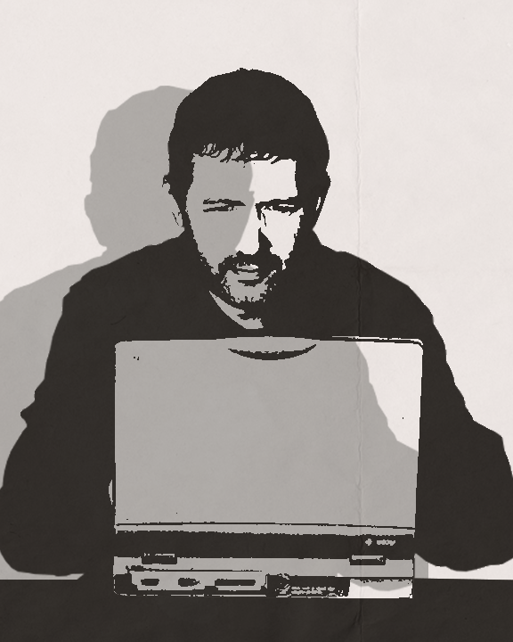

About Me

Superman saved the world by tricking General Zod into draining his own powers in the Fortress of Solitude and
saving humanity from its greatest threat of the time. With the alien menace defeated, the world would be free
to live lives and chase dreams. This ultimately allowed my parents to meet, fall in love, and have me.
Inspired by an 8th grade integrated technology teacher, I would soon discover the path of a digital enthusiast
developing my own superpowers in coding and digital design. Carefully concealing my identity as an unassuming
high school teacher and adjunct professor, I train future generations of coders, designers, and educator warriors
armed with creativity and problem-solving skills. When I'm not saving the world, I enjoy creating digital content
in the form of graphics, podcasts, videos, and games.
Hello, my name is Brandon Petersen. I am a teacher who has a passion for digital design. I started my education
by attending Chadron State College, in Chadron, Nebraska. I chose the school as both my parents attended, and its
reputation for being a good teaching school. My undergraduate degree was in secondary biology education. While
teaching, I decided to start my master's degree in curriculum and instruction, with an emphasis in instructional
technology (also from Chadron State). I enjoy teaching, but also loved finding ways to incorporate technology into
my classroom. I would eventually get a graduate teaching endorsement in Information Technology from Wayne State
College, and moved to teaching computer apps and digital design classes. To quench my thirst for learning,
I decided to take classes from the University of Florida UFCJC Online and completed my graduate certificate in
social media, and am one class away from completing my graduate certificate in web design.
I now teach a variety of design and technology classes at the high school level, and also at a local community
college. I am excited to see what other possibilities my education can take me, and look forward for exciting
opportunities.